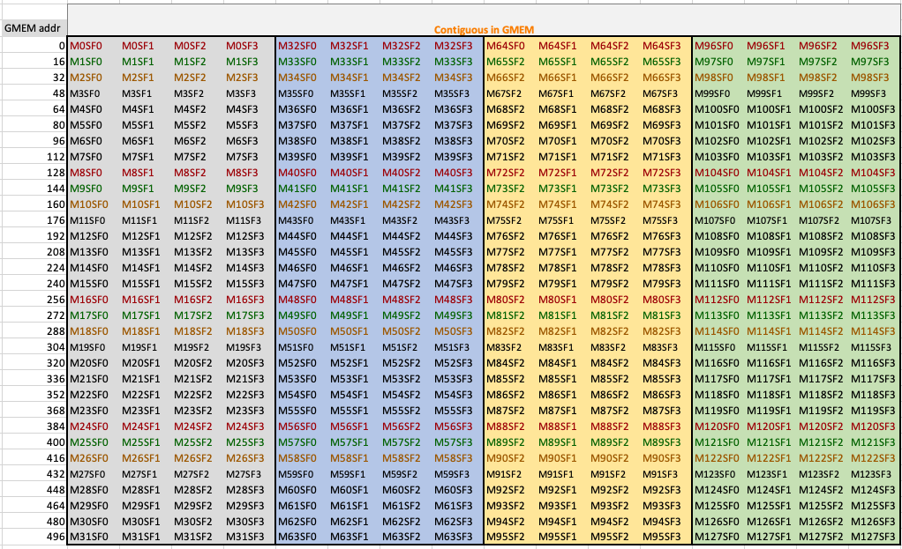
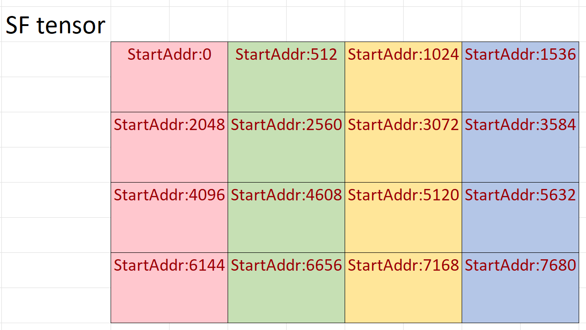

Blackwell SM100 GEMMs
TLDR; jump to block scaled GEMM example
Blackwell SM100 introduces tcgen05.mma instructions. tcgen05.mma instructions support all legacy types (tfloat32_t, half_t, bfloat16_t, int8_t, uint8_t) and the new 4, 6, and 8-bits floating point datatypes with and without scale factors. This document explains the new tcgen05.mma instructions supported by CUTLASS and how one can leverage CUTLASS to create efficient SM100 GEMM kernels targeting these new mma instructions.
Blackwell SM100 has 7 new tcgen05.mma instructions. These instructions are 2x to 4x faster then Hopper Architecture’s WGMMA instructions.
| Ptx Instruction | Throughput | Notes |
|---|---|---|
| tcgen05.mma(.sp).cta_group::[1|2].kind::tf32 | 2x Hopper Tf32 Tensor Core | MMA with A={tf32} x B={tf32} TN, NT, TT, NN layouts |
| tcgen05.mma(.sp).cta_group::[1|2].kind::f16 | 2x Hopper Fp16 Tensor Core | MMA with A={f16} x B={f16} or A={bf16} x B={bf16} TN, NT, TT, NN layouts |
| tcgen05.mma(.sp).cta_group::[1|2].kind::i8 | 2x Hopper I8 Tensor Core | MMA with A={i8} x B={i8} or A={u8} x B={u8} TN, NT, TT, NN layouts |
| tcgen05.mma(.sp).cta_group::[1|2].kind::f8f6f4 | 2x Hopper Fp8 Tensor Core | Mixed precision MMA with A={f4,f6,f8} x B={f4,f6,f8} TN, NT, TT, NN layouts |
| tcgen05.mma(.sp).cta_group::[1|2].kind::mxf8f6f4.block_scale | 2x Hopper Fp8 Tensor Core | Block scaled mixed precision MMA with A={mxf4,mxf6,mxf8} x B={mxf4,mxf6,mxf8} with TN, NT, TT, NN layouts |
| tcgen05.mma(.sp).cta_group::[1|2].kind::mxf4.block_scale | 4x Hopper Fp8 Tensor Core | Block scaled MMA with A={mxf4} x B={mxf4} with TN layouts |
| tcgen05.mma(.sp).cta_group::[1|2].kind::mxf4nvf4.block_scale.scale_vec_size::[2X|4X] | 4x Hopper Fp8 Tensor Core | Block scaled MMA with A={mxf4} x B={mxf4} or A={nvf4} x B={nvf4} with TN layouts |
For more detailed information see tcgen05.mma PTX documentation.
New in Blackwell SM100
Block Scaled GEMMs
Instructions with kind modifiers mxf8f6f4, mxf4, and nvf4mxf4 perform matrix multiplication operations with scale factors of the form \(D = C +( A \times SFA) * (B \times SFB)\). Scale factors are applied to GEMM-K dimension such that every 16 or 32 elements of \(A\) and \(B\) matrices in K dimension have an associated scale factor (32 or 64 elements for sparse as sparse gemm compress 2x along k-dim). For example, an \(M\times K\), \(A\) matrix has an associated \(M \times \lceil K/32 \rceil\) SFA matrix; and an \(N\times K\) \(B\), matrix has an associated \(N \times \lceil K/32 \rceil\) SFB matrix. For block scaled GEMMs, an entry of output D matrix is \(D_{ij} = C_{ij} + \sum_{k} (A_{i,k} \times SFA_{i,k/SV}) \times (B_{j,k}\times SFB_{j,k/SV})\), in index notation, we SV is the scale factor vector size (16 or 32). Further details can be found in PTX documentation on block scaling.
Blackwell Narrow Precision Data Types
Narrow-precision tcgen05.mma instructions can operate on several 4, 6, and 8-bit data types. Blackwell MMAs can operate on five different 8-bit floating point values, of which only two (float_ue8m0_t and float_ue4m3_t) can be used as scale factor data types. There are two 6-bit floating point types and one 4-bit floating point data type. See PTX documentation for narrow precision data types for details.
Blackwell Narrow Precision Data Types | Data Type | Exponent Bits | Mantissa Bits | Signed | Bit Size | |——————-|—————|—————|——–|———-| | float_e4m3_t |4 |3 | Yes | 8 | | float_e5m2_t |5 |2 | Yes | 8 | | float_e2m3_t |2 |3 | Yes | 6 | | float_e3m2_t |3 |2 | Yes | 6 | | float_e2m1_t |2 |1 | Yes | 4 | | float_ue8m0_t1 |8 |0 | No | 8 | | float_ue4m3_t2 |4 |3 | No | 8 |
Block scaled MMAs use mx and nv types which are a pair of float8_t, float6_t, float4_t with 2 of the scale factor data types with a predetermined scale factor vector size. mx types follow OCP specification (see OCP Specification). The following types provided by CUTLASS can be used as inputs to collective builders to generate the block scaled kernels:
Blackwell Block Scaled Narrow Precision Data Types | Mx/Nv Data Type |Scale Factor Type | SF Vector Size (Dense) | SF Vector Size (Sparse)| OCP Compliant | |—————————-|——————|————————|————————|—————| | mx_float8_t<Any F8type> |float_ue8m0_t |32 |64 | Yes | | mx_float6_t<Any F6Type> |float_ue8m0_t |32 |64 | Yes | | mx_float4_t |float_ue8m0_t |32 |64 | Yes | | nv_float4_t |float_ue4m3_t |16 |32 | No |
Layouts, Tensor Alignment Requirements to Target tcgen05.mma Instructions
Tables below list valid data type, and AB layout combinations. Note that the alignment is reported as number of elements. A and B matrix layouts are represented with T and N. T represents row-major layouts, and N represents column-major layouts. For instance, TN is row-major A matrix with column-major B matrix.
For legacy types (tf32, f16, bf16, i8 and u8) alignment requirements for A and B matrices are the same as in Hopper. All four layouts (TT, NN, NT, TT) are supported for all legacy data types.
Table 1: Valid Data Type, Alignment, and Layout Combinations For MMAs with Legacy Types | | Dense / Sparse | A Type | B Type | AB Layout | A Alignment | B Alignment | Target tcgen05.mma.kind | Unit Test | |——————————-|—————-|————|————|—————-|——————|————-|————————-|———- | |1 | Dense | tfloat32_t | tfloat32_t | TN, NN, NT, TT | 4 | 4 | tf32 | | |2 | Dense | half_t | half_t | TN, NN, NT, TT | 8 | 8 | f16 | Unit tests | |3 | Dense | bfloat16_t | bfloat16_t | TN, NN, NT, TT | 8 | 8 | f16 | Similar to half_t unit tests| |4 | Dense | int8_t | int8_t | TN, NN, NT, TT | 16 | 16 | i8 | Unit tests | |5 | Dense | uint8_t | uint8_t | TN, NN, NT, TT | 16 | 16 | i8 | Similar to int8_t unit tests | |6 | Sparse | tfloat32_t | tfloat32_t | TN, NN, NT, TT | 4 (N) / 8 (T) | 4 | tf32 | Unit tests | |7 | Sparse | half_t | half_t | TN, NN, NT, TT | 8 (N) / 16 (T) | 8 | f16 | Unit tests | |8 | Sparse | bfloat16_t | bfloat16_t | TN, NN, NT, TT | 8 (N) / 16 (T) | 8 | f16 | Similar to half_t unit tests | |9 | Sparse | int8_t | int8_t | TN, NN, NT, TT | 16 (N) / 32 (T) | 16 | i8 | Unit tests | |10 | Sparse | uint8_t | uint8_t | TN, NN, NT, TT | 16 (N) / 32 (T) | 16 | i8 | Similar to int8_t unit tests |
For narrow precision Mmas, not all A/B type, and A/B layout combinations are supported by every tcgen05.mma instructions. Furthermore, tensor copy instructions for subbyte types impose additional alignment requirements while loading narrow-precision tensors from global memory to shared memory (see PTX doc for details).
Below tables list valid layout, and alignment values for each A and B data type combination and their target tcgen05.mma instructions supported by CUTLASS.
Table 2: Valid Data Type, Alignment, and Layout Combinations For Narrow Precision MMAs Without Block Scaling | | Dense / Sparse | A Type | B Type | AB Layout | A Alignment | B Alignment | Target tcgen05.mma.kind | Unit Test | |——————————-|—————-|———-|———-|—————-|——————-|————-|————————-|———–| |1 | Dense | float4_t | float4_t | TN, NN, NT, TT | 128 | 128 | f8f6f4 | TN unit tests
NT unit tests
NN unit tests
TT unit tests | |2 | Dense | float4_t | float6_t | TN, NN, NT, TT | 128 | 128 | f8f6f4 | TN unit tests
NT unit tests
NN unit tests
TT unit tests | |3 | Dense | float6_t | float4_t | TN, NN, NT, TT | 128 | 128 | f8f6f4 | TN unit tests
NT unit tests
NN unit tests
TT unit tests | |4 | Dense | float4_t | float8_t | TN, NN, NT, TT | 128 | 16 | f8f6f4 | TN unit tests
NT unit tests | |5 | Dense | float8_t | float4_t | TN, NN, NT, TT | 16 | 128 | f8f6f4 | TN unit tests
NT unit tests | |6 | Dense | float6_t | float6_t | TN, NN, NT, TT | 128 | 128 | f8f6f4 | TN unit tests
NT unit tests
NN unit tests
TT unit tests | |7 | Dense | float6_t | float8_t | TN, NN, NT, TT | 128 | 16 | f8f6f4 | TN unit tests
NT unit tests | |8 | Dense | float8_t | float6_t | TN, NN, NT, TT | 16 | 128 | f8f6f4 | TN unit tests
NT unit tests | |9 | Dense | float8_t | float8_t | TN, NN, NT, TT | 16 | 16 | f8f6f4 | Unit tests| |10 | Sparse | float4_t | float4_t | TN, NN, NT, TT | 128 (N) / 256 (T) | 128 | f8f6f4 | TN unit tests | |11 | Sparse | float4_t | float6_t | TN, NN, NT, TT | 128 (N) / 256 (T) | 128 | f8f6f4 | TN unit tests | |12 | Sparse | float6_t | float4_t | TN, NN, NT, TT | 128 (N) / 256 (T) | 128 | f8f6f4 | TN unit tests | |13 | Sparse | float4_t | float8_t | TN, NN, NT, TT | 128 (N) / 256 (T) | 16 | f8f6f4 | TN unit tests | |14 | Sparse | float8_t | float4_t | TN, NN, NT, TT | 16 (N) / 32 (T) | 128 | f8f6f4 | TN unit tests | |15 | Sparse | float6_t | float6_t | TN, NN, NT, TT | 128 (N) / 256 (T) | 128 | f8f6f4 | TN unit tests | |16 | Sparse | float6_t | float8_t | TN, NN, NT, TT | 128 (N) / 256 (T) | 16 | f8f6f4 | TN unit tests | |17 | Sparse | float8_t | float6_t | TN, NN, NT, TT | 16 (N) / 32 (T) | 128 | f8f6f4 | TN unit tests | |18 | Sparse | float8_t | float8_t | TN, NN, NT, TT | 16 (N) / 32 (T) | 16 | f8f6f4 | TN unit tests |
Table 3: Valid Data Type, Alignment, and Layout Combinations for Block Scaled Narrow Precision MMAs | | Dense / Sparse | A Type | B Type | AB Layout | A Alignment | B Alignment | Target tcgen05.mma.kind |Unit Test| |————————–|—————-|————-|————-|—————-|——————-|————-|————————-|———| |1 | Dense | nv_float4_t | nv_float4_t | TN | 32 | 32 | mxf4nvf4 |TN unit tests| |2 | Dense | mx_float4_t | mx_float4_t | TN | 32 | 32 | mxf4, mxf4nvf4 |TN unit tests| |3 | Dense | mx_float4_t | mx_float4_t | TN, NN, NT, TT | 128 | 128 | mxf8f6f4 |NT unit tests| |4 | Dense | mx_float4_t | mx_float6_t | TN, NN, NT, TT | 128 | 128 | mxf8f6f4 |TN unit tests
NT unit tests| |5 | Dense | mx_float6_t | mx_float4_t | TN, NN, NT, TT | 128 | 128 | mxf8f6f4 |TN unit tests
NT unit tests| |6 | Dense | mx_float4_t | mx_float8_t | TN, NN, NT, TT | 128 | 16 | mxf8f6f4 |TN unit tests
NT unit tests| |7 | Dense | mx_float8_t | mx_float4_t | TN, NN, NT, TT | 16 | 128 | mxf8f6f4 |TN unit tests
NT unit tests| |8 | Dense | mx_float6_t | mx_float6_t | TN, NN, NT, TT | 128 | 128 | mxf8f6f4 |TN unit tests
NT unit tests| |9 | Dense | mx_float6_t | mx_float8_t | TN, NN, NT, TT | 128 | 16 | mxf8f6f4 |TN unit tests
NT unit tests| |10 | Dense | mx_float8_t | mx_float6_t | TN, NN, NT, TT | 16 | 128 | mxf8f6f4 |TN unit tests
NT unit tests| |11 | Dense | mx_float8_t | mx_float8_t | TN, NN, NT, TT | 16 | 16 | mxf8f6f4 |TN unit tests
NT unit tests| |12 | Sparse | nv_float4_t | nv_float4_t | TN | 32 (N) / 64 (T) | 32 | mxf4nvf4 |TN unit tests | |13 | Sparse | mx_float4_t | mx_float4_t | TN | 32 (N) / 64 (T) | 32 | mxf4, mxf4nvf4 |TN unit tests | |14 | Sparse | mx_float4_t | mx_float4_t | TN, NN, NT, TT | 128 (N) / 256 (T) | 128 | mxf8f6f4 |TN unit tests | |15 | Sparse | mx_float4_t | mx_float6_t | TN, NN, NT, TT | 128 (N) / 256 (T) | 128 | mxf8f6f4 |TN unit tests | |16 | Sparse | mx_float6_t | mx_float4_t | TN, NN, NT, TT | 128 (N) / 256 (T) | 128 | mxf8f6f4 |TN unit tests | |17 | Sparse | mx_float4_t | mx_float8_t | TN, NN, NT, TT | 128 (N) / 256 (T) | 16 | mxf8f6f4 |TN unit tests | |18 | Sparse | mx_float8_t | mx_float4_t | TN, NN, NT, TT | 16 (N) / 32 (T) | 128 | mxf8f6f4 |TN unit tests | |19 | Sparse | mx_float6_t | mx_float6_t | TN, NN, NT, TT | 128 (N) / 256 (T) | 128 | mxf8f6f4 |TN unit tests | |20 | Sparse | mx_float6_t | mx_float8_t | TN, NN, NT, TT | 128 (N) / 256 (T) | 16 | mxf8f6f4 |TN unit tests | |21 | Sparse | mx_float8_t | mx_float6_t | TN, NN, NT, TT | 16 (N) / 32 (T) | 128 | mxf8f6f4 |TN unit tests | |22 | Sparse | mx_float8_t | mx_float8_t | TN, NN, NT, TT | 16 (N) / 32 (T) | 16 | mxf8f6f4 |TN unit tests |
MMA tile shapes supported
The alignment restrictions also limit the options for Mma Tile Shapes. Tables below list the supported/valid MmaTileShape, Layout, and Dispatch Policy combinations for each row of Table 1, Table 2, and Table 3.
Table 4: Valid Tile Shapes and Dispatch Policies for legacy types (All rows of Table 1) | Dense / Sparse | 1/2 SM | Mma Tile Shape | TN | TT | NT | NN | Dispatch Policy | |—————-|——–|——————–|—-|—-|—-|—-|——————————————| | Dense | 1SM | 64x64x(4MMA-K) | Y | Y | Y | Y | KernelTmaWarpSpecialized1SmSm100 | | Dense | 1SM | 64x128x(4MMA-K) | Y | Y | Y | Y | KernelTmaWarpSpecialized1SmSm100 | | Dense | 1SM | 64x192x(4MMA-K) | Y | Y | Y | Y | KernelTmaWarpSpecialized1SmSm100 | | Dense | 1SM | 64x256x(4MMA-K) | Y | Y | Y | Y | KernelTmaWarpSpecialized1SmSm100 | | Dense | 1SM | 128x64x(4MMA-K) | Y | Y | Y | Y | KernelTmaWarpSpecialized1SmSm100 | | Dense | 1SM | 128x128x(4MMA-K) | Y | Y | Y | Y | KernelTmaWarpSpecialized1SmSm100 | | Dense | 1SM | 128x192x(4MMA-K) | Y | Y | Y | Y | KernelTmaWarpSpecialized1SmSm100 | | Dense | 1SM | 128x256x(4MMA-K) | Y | Y | Y | Y | KernelTmaWarpSpecialized1SmSm100 | | Dense | 2SM | 128x64x(4MMA-K) | Y | Y | Y | Y | KernelTmaWarpSpecialized2SmSm100 | | Dense | 2SM | 128x128x(4MMA-K) | Y | Y | Y | Y | KernelTmaWarpSpecialized2SmSm100 | | Dense | 2SM | 128x192x(4MMA-K) | Y | Y | Y | Y | KernelTmaWarpSpecialized2SmSm100 | | Dense | 2SM | 128x256x(4MMA-K) | Y | Y | Y | Y | KernelTmaWarpSpecialized2SmSm100 | | Dense | 2SM | 256x64x(4MMA-K) | Y | Y | Y | Y | KernelTmaWarpSpecialized2SmSm100 | | Dense | 2SM | 256x128x(4MMA-K) | Y | Y | Y | Y | KernelTmaWarpSpecialized2SmSm100 | | Dense | 2SM | 256x192x(4MMA-K) | Y | Y | Y | Y | KernelTmaWarpSpecialized2SmSm100 | | Dense | 2SM | 256x256x(4MMA-K) | Y | Y | Y | Y | KernelTmaWarpSpecialized2SmSm100 | | Sparse | 1SM | 128x64x(2/4MMA-K) | Y | Y | Y | Y | KernelSparseTmaWarpSpecialized1SmSm100 | | Sparse | 1SM | 128x128x(2/4MMA-K)| Y | Y | Y | Y | KernelSparseTmaWarpSpecialized1SmSm100 | | Sparse | 1SM | 128x192x(2/4MMA-K)| Y | Y | Y | Y | KernelSparseTmaWarpSpecialized1SmSm100 | | Sparse | 1SM | 128x256x(2/4MMA-K)| Y | Y | Y | Y | KernelSparseTmaWarpSpecialized1SmSm100 | | Sparse | 2SM | 256x64x(2/4MMA-K) | Y | Y | Y | Y | KernelSparseTmaWarpSpecialized2SmSm100 | | Sparse | 2SM | 256x128x(2/4MMA-K)| Y | Y | Y | Y | KernelSparseTmaWarpSpecialized2SmSm100 | | Sparse | 2SM | 256x192x(2/4MMA-K)| Y | Y | Y | Y | KernelSparseTmaWarpSpecialized2SmSm100 | | Sparse | 2SM | 256x256x(2/4MMA-K)| Y | Y | Y | Y | KernelSparseTmaWarpSpecialized2SmSm100 |
Table 5: Valid Tile Shapes and Dispatch Policies for {float4_t, float6_t} x {float4_t, float6_t} (Rows 1,2,3,6,10,11,12,and 15 of Table 2)
| Dense / Sparse | 1/2 SM | Mma Tile Shape | TN | TT | NT | NN | Dispatch Policy |
|---|---|---|---|---|---|---|---|
| Dense | 1SM | 64x64x128 | Y | N | N | N | KernelTmaWarpSpecialized1SmSm100 |
| Dense | 1SM | 64x128x128 | Y | Y | N | N | KernelTmaWarpSpecialized1SmSm100 |
| Dense | 1SM | 64x192x128 | Y | N | N | N | KernelTmaWarpSpecialized1SmSm100 |
| Dense | 1SM | 64x256x128 | Y | Y | N | N | KernelTmaWarpSpecialized1SmSm100 |
| Dense | 1SM | 128x64x128 | Y | N | N | Y | KernelTmaWarpSpecialized1SmSm100 |
| Dense | 1SM | 128x128x128 | Y | Y | Y | Y | KernelTmaWarpSpecialized1SmSm100 |
| Dense | 1SM | 128x192x128 | Y | N | N | Y | KernelTmaWarpSpecialized1SmSm100 |
| Dense | 1SM | 128x256x128 | Y | Y | Y | Y | KernelTmaWarpSpecialized1SmSm100 |
| Dense | 2SM | 128x64x128 | Y | N | N | N | KernelTmaWarpSpecialized2SmSm100 |
| Dense | 2SM | 128x128x128 | Y | N | N | N | KernelTmaWarpSpecialized2SmSm100 |
| Dense | 2SM | 128x192x128 | Y | N | N | N | KernelTmaWarpSpecialized2SmSm100 |
| Dense | 2SM | 128x256x128 | Y | Y | N | N | KernelTmaWarpSpecialized2SmSm100 |
| Dense | 2SM | 256x64x128 | Y | N | N | Y | KernelTmaWarpSpecialized2SmSm100 |
| Dense | 2SM | 256x128x128 | Y | N | N | Y | KernelTmaWarpSpecialized2SmSm100 |
| Dense | 2SM | 256x192x128 | Y | N | N | Y | KernelTmaWarpSpecialized2SmSm100 |
| Dense | 2SM | 256x256x128 | Y | Y | Y | Y | KernelTmaWarpSpecialized2SmSm100 |
| Sparse | 1SM | 128x128x128 | N | N | Y | Y | KernelSparseTmaWarpSpecialized1SmSm100 |
| Sparse | 1SM | 128x128x256 | Y | Y | Y | Y | KernelSparseTmaWarpSpecialized1SmSm100 |
| Sparse | 1SM | 128x256x128 | N | N | Y | Y | KernelSparseTmaWarpSpecialized1SmSm100 |
| Sparse | 1SM | 128x256x256 | Y | Y | Y | Y | KernelSparseTmaWarpSpecialized1SmSm100 |
| Sparse | 2SM | 256x128x128 | N | N | N | Y | KernelSparseTmaWarpSpecialized2SmSm100 |
| Sparse | 2SM | 256x128x256 | Y | N | N | Y | KernelSparseTmaWarpSpecialized2SmSm100 |
| Sparse | 2SM | 256x256x128 | N | N | Y | Y | KernelSparseTmaWarpSpecialized2SmSm100 |
| Sparse | 2SM | 256x256x256 | Y | Y | Y | Y | KernelSparseTmaWarpSpecialized2SmSm100 |
Table 6: Valid Tile Shapes and Dispatch Policies for float8_t x {float4_t, float6_t} (Rows 5,8,14,and 17 of Table 2)
| Dense / Sparse | 1/2 SM | Mma Tile Shape | TN | TT | NT | NN | Dispatch Policy |
|---|---|---|---|---|---|---|---|
| Dense | 1SM | 64x64x128 | Y | N | N | Y | KernelTmaWarpSpecialized1SmSm100 |
| Dense | 1SM | 64x128x128 | Y | Y | Y | Y | KernelTmaWarpSpecialized1SmSm100 |
| Dense | 1SM | 64x192x128 | Y | N | N | Y | KernelTmaWarpSpecialized1SmSm100 |
| Dense | 1SM | 64x256x128 | Y | Y | Y | Y | KernelTmaWarpSpecialized1SmSm100 |
| Dense | 1SM | 128x64x128 | Y | N | N | Y | KernelTmaWarpSpecialized1SmSm100 |
| Dense | 1SM | 128x128x128 | Y | Y | Y | Y | KernelTmaWarpSpecialized1SmSm100 |
| Dense | 1SM | 128x192x128 | Y | N | N | Y | KernelTmaWarpSpecialized1SmSm100 |
| Dense | 1SM | 128x256x128 | Y | Y | Y | Y | KernelTmaWarpSpecialized1SmSm100 |
| Dense | 2SM | 128x64x128 | Y | N | N | Y | KernelTmaWarpSpecialized2SmSm100 |
| Dense | 2SM | 128x128x128 | Y | N | N | Y | KernelTmaWarpSpecialized2SmSm100 |
| Dense | 2SM | 128x192x128 | Y | N | N | Y | KernelTmaWarpSpecialized2SmSm100 |
| Dense | 2SM | 128x256x128 | Y | Y | Y | Y | KernelTmaWarpSpecialized2SmSm100 |
| Dense | 2SM | 256x64x128 | Y | N | N | Y | KernelTmaWarpSpecialized2SmSm100 |
| Dense | 2SM | 256x128x128 | Y | N | N | Y | KernelTmaWarpSpecialized2SmSm100 |
| Dense | 2SM | 256x192x128 | Y | N | N | Y | KernelTmaWarpSpecialized2SmSm100 |
| Dense | 2SM | 256x256x128 | Y | Y | Y | Y | KernelTmaWarpSpecialized2SmSm100 |
| Sparse | 1SM | 128x128x128 | Y | Y | Y | Y | KernelSparseTmaWarpSpecialized1SmSm100 |
| Sparse | 1SM | 128x128x256 | Y | Y | Y | Y | KernelSparseTmaWarpSpecialized1SmSm100 |
| Sparse | 1SM | 128x256x128 | Y | Y | Y | Y | KernelSparseTmaWarpSpecialized1SmSm100 |
| Sparse | 1SM | 128x256x256 | Y | Y | Y | Y | KernelSparseTmaWarpSpecialized1SmSm100 |
| Sparse | 2SM | 256x128x128 | Y | Y | N | Y | KernelSparseTmaWarpSpecialized2SmSm100 |
| Sparse | 2SM | 256x128x256 | Y | N | N | Y | KernelSparseTmaWarpSpecialized2SmSm100 |
| Sparse | 2SM | 256x256x128 | Y | Y | Y | Y | KernelSparseTmaWarpSpecialized2SmSm100 |
| Sparse | 2SM | 256x256x256 | Y | Y | Y | Y | KernelSparseTmaWarpSpecialized2SmSm100 |
Table 7: Valid Tile Shapes and Dispatch Policies for {float4_t, float6_t} x float8_t (Rows 4,7,13,and 16 of Table 2)
| Dense / Sparse | 1/2 SM | Mma Tile Shape | TN | TT | NT | NN | Dispatch Policy |
|---|---|---|---|---|---|---|---|
| Dense | 1SM | 64x64x128 | Y | Y | N | N | KernelTmaWarpSpecialized1SmSm100 |
| Dense | 1SM | 64x128x128 | Y | Y | N | N | KernelTmaWarpSpecialized1SmSm100 |
| Dense | 1SM | 64x192x128 | Y | Y | N | N | KernelTmaWarpSpecialized1SmSm100 |
| Dense | 1SM | 64x256x128 | Y | Y | N | N | KernelTmaWarpSpecialized1SmSm100 |
| Dense | 1SM | 128x64x128 | Y | Y | Y | Y | KernelTmaWarpSpecialized1SmSm100 |
| Dense | 1SM | 128x128x128 | Y | Y | Y | Y | KernelTmaWarpSpecialized1SmSm100 |
| Dense | 1SM | 128x192x128 | Y | Y | Y | Y | KernelTmaWarpSpecialized1SmSm100 |
| Dense | 1SM | 128x256x128 | Y | Y | Y | Y | KernelTmaWarpSpecialized1SmSm100 |
| Dense | 2SM | 128x64x128 | Y | Y | Y | Y | KernelTmaWarpSpecialized2SmSm100 |
| Dense | 2SM | 128x128x128 | Y | Y | N | N | KernelTmaWarpSpecialized2SmSm100 |
| Dense | 2SM | 128x192x128 | Y | Y | N | N | KernelTmaWarpSpecialized2SmSm100 |
| Dense | 2SM | 128x256x128 | Y | Y | N | N | KernelTmaWarpSpecialized2SmSm100 |
| Dense | 2SM | 256x64x128 | Y | Y | Y | Y | KernelTmaWarpSpecialized2SmSm100 |
| Dense | 2SM | 256x128x128 | Y | Y | Y | Y | KernelTmaWarpSpecialized2SmSm100 |
| Dense | 2SM | 256x192x128 | Y | Y | Y | Y | KernelTmaWarpSpecialized2SmSm100 |
| Dense | 2SM | 256x256x128 | Y | Y | Y | Y | KernelTmaWarpSpecialized2SmSm100 |
| Sparse | 1SM | 128x128x128 | N | N | Y | Y | KernelSparseTmaWarpSpecialized1SmSm100 |
| Sparse | 1SM | 128x128x256 | Y | Y | Y | Y | KernelSparseTmaWarpSpecialized1SmSm100 |
| Sparse | 1SM | 128x256x128 | N | N | Y | Y | KernelSparseTmaWarpSpecialized1SmSm100 |
| Sparse | 1SM | 128x256x256 | Y | Y | Y | Y | KernelSparseTmaWarpSpecialized1SmSm100 |
| Sparse | 2SM | 256x128x128 | N | N | Y | Y | KernelSparseTmaWarpSpecialized2SmSm100 |
| Sparse | 2SM | 256x128x256 | Y | Y | Y | Y | KernelSparseTmaWarpSpecialized2SmSm100 |
| Sparse | 2SM | 256x256x128 | N | N | Y | Y | KernelSparseTmaWarpSpecialized2SmSm100 |
| Sparse | 2SM | 256x256x256 | Y | Y | Y | Y | KernelSparseTmaWarpSpecialized2SmSm100 |
Table 8: Valid Tile Shapes and Dispatch Policies for float8_t x float8_t (Row 9,18 of Table 2)
| Dense / Sparse | 1/2 SM | Mma Tile Shape | TN | TT | NT | NN | Dispatch Policy |
|---|---|---|---|---|---|---|---|
| Dense | 1SM | 64x64x128 | Y | Y | Y | Y | KernelTmaWarpSpecialized1SmSm100 |
| Dense | 1SM | 64x128x128 | Y | Y | Y | Y | KernelTmaWarpSpecialized1SmSm100 |
| Dense | 1SM | 64x192x128 | Y | Y | Y | Y | KernelTmaWarpSpecialized1SmSm100 |
| Dense | 1SM | 64x256x128 | Y | Y | Y | Y | KernelTmaWarpSpecialized1SmSm100 |
| Dense | 1SM | 128x64x128 | Y | Y | Y | Y | KernelTmaWarpSpecialized1SmSm100 |
| Dense | 1SM | 128x128x128 | Y | Y | Y | Y | KernelTmaWarpSpecialized1SmSm100 |
| Dense | 1SM | 128x192x128 | Y | Y | Y | Y | KernelTmaWarpSpecialized1SmSm100 |
| Dense | 1SM | 128x256x128 | Y | Y | Y | Y | KernelTmaWarpSpecialized1SmSm100 |
| Dense | 2SM | 128x64x128 | Y | Y | Y | Y | KernelTmaWarpSpecialized2SmSm100 |
| Dense | 2SM | 128x128x128 | Y | Y | Y | Y | KernelTmaWarpSpecialized2SmSm100 |
| Dense | 2SM | 128x192x128 | Y | Y | Y | Y | KernelTmaWarpSpecialized2SmSm100 |
| Dense | 2SM | 128x256x128 | Y | Y | Y | Y | KernelTmaWarpSpecialized2SmSm100 |
| Dense | 2SM | 256x64x128 | Y | Y | Y | Y | KernelTmaWarpSpecialized2SmSm100 |
| Dense | 2SM | 256x128x128 | Y | Y | Y | Y | KernelTmaWarpSpecialized2SmSm100 |
| Dense | 2SM | 256x192x128 | Y | Y | Y | Y | KernelTmaWarpSpecialized2SmSm100 |
| Dense | 2SM | 256x256x128 | Y | Y | Y | Y | KernelTmaWarpSpecialized2SmSm100 |
| Sparse | 1SM | 128x64x128 | Y | Y | Y | Y | KernelSparseTmaWarpSpecialized1SmSm100 |
| Sparse | 1SM | 128x128x128 | Y | Y | Y | Y | KernelSparseTmaWarpSpecialized1SmSm100 |
| Sparse | 1SM | 128x192x128 | Y | Y | Y | Y | KernelSparseTmaWarpSpecialized1SmSm100 |
| Sparse | 1SM | 128x256x128 | Y | Y | Y | Y | KernelSparseTmaWarpSpecialized1SmSm100 |
| Sparse | 2SM | 256x64x128 | Y | Y | Y | Y | KernelSparseTmaWarpSpecialized2SmSm100 |
| Sparse | 2SM | 256x128x128 | Y | Y | Y | Y | KernelSparseTmaWarpSpecialized2SmSm100 |
| Sparse | 2SM | 256x192x128 | Y | Y | Y | Y | KernelSparseTmaWarpSpecialized2SmSm100 |
| Sparse | 2SM | 256x256x128 | Y | Y | Y | Y | KernelSparseTmaWarpSpecialized2SmSm100 |
Table 9: Valid Tile Shapes for nv_float4_t x nv_float4_t (Row 1 and 12 of Table 3) | Dense / Sparse | 1/2 SM | Mma Tile Shape | TN | TT | NT | NN | Dispatch Policy | |—————-|——–|—————-|—-|—-|—-|—-|———————————————-| | Dense | 1SM | 128x128x256 | Y | N | N | N | KernelTmaWarpSpecialized1SmNvf4Sm100 | | Dense | 1SM | 128x192x256 | Y | N | N | N | KernelTmaWarpSpecialized1SmNvf4Sm100 | | Dense | 1SM | 128x256x256 | Y | N | N | N | KernelTmaWarpSpecialized1SmNvf4Sm100 | | Dense | 2SM | 256x128x256 | Y | N | N | N | KernelTmaWarpSpecialized2SmNvf4Sm100 | | Dense | 2SM | 256x192x256 | Y | N | N | N | KernelTmaWarpSpecialized2SmNvf4Sm100 | | Dense | 2SM | 256x256x256 | Y | N | N | N | KernelTmaWarpSpecialized2SmNvf4Sm100 | | Sparse | 1SM | 128x128x256 | Y | N | N | N | KernelSparseTmaWarpSpecialized1SmNvf4Sm100 | | Sparse | 1SM | 128x256x256 | Y | N | N | N | KernelSparseTmaWarpSpecialized1SmNvf4Sm100 | | Sparse | 2SM | 256x128x256 | Y | N | N | N | KernelSparseTmaWarpSpecialized2SmNvf4Sm100 | | Sparse | 2SM | 256x256x256 | Y | N | N | N | KernelSparseTmaWarpSpecialized2SmNvf4Sm100 |
Table 10: Valid Tile Shapes and Dispatch Policies for mx_float4_t x mx_float4_t (Row 2 and 13 of Table 3) | Dense / Sparse | 1/2 SM | Mma Tile Shape | TN | TT | NT | NN | Dispatch Policy | |—————-|——–|—————-|—-|—-|—-|—-|———————————————-| | Dense | 1SM | 128x128x256 | Y | N | N | N | KernelTmaWarpSpecialized1SmMxf4Sm100 | | Dense | 1SM | 128x192x256 | Y | N | N | N | KernelTmaWarpSpecialized1SmMxf4Sm100 | | Dense | 1SM | 128x256x256 | Y | N | N | N | KernelTmaWarpSpecialized1SmMxf4Sm100 | | Dense | 2SM | 256x128x256 | Y | N | N | N | KernelTmaWarpSpecialized2SmMxf4Sm100 | | Dense | 2SM | 256x192x256 | Y | N | N | N | KernelTmaWarpSpecialized2SmMxf4Sm100 | | Dense | 2SM | 256x256x256 | Y | N | N | N | KernelTmaWarpSpecialized2SmMxf4Sm100 | | Sparse | 1SM | 128x128x256 | Y | N | N | N | KernelSparseTmaWarpSpecialized1SmNvf4Sm100 | | Sparse | 1SM | 128x256x256 | Y | N | N | N | KernelSparseTmaWarpSpecialized1SmNvf4Sm100 | | Sparse | 2SM | 256x128x256 | Y | N | N | N | KernelSparseTmaWarpSpecialized2SmNvf4Sm100 | | Sparse | 2SM | 256x256x256 | Y | N | N | N | KernelSparseTmaWarpSpecialized2SmNvf4Sm100 |
Table 11: Valid Tile Shapes and Dispatch Policies for mx_float4_t x mx_float4_t (Row 3 and 14 of Table 3) | Dense / Sparse | 1/2 SM | Mma Tile Shape | TN | TT | NT | NN | Dispatch Policy | |—————-|——–|—————-|—-|—-|—-|—-|————————————————–| | Dense | 1SM | 128x128x128 | Y | Y | Y | Y | KernelTmaWarpSpecialized1SmMxf8f6f4Sm100 | | Dense | 1SM | 128x192x128 | Y | N | N | Y | KernelTmaWarpSpecialized1SmMxf8f6f4Sm100 | | Dense | 1SM | 128x256x128 | Y | Y | Y | Y | KernelTmaWarpSpecialized1SmMxf8f6f4Sm100 | | Dense | 2SM | 256x128x128 | Y | N | N | Y | KernelTmaWarpSpecialized2SmMxf8f6f4Sm100 | | Dense | 2SM | 256x192x128 | Y | N | N | Y | KernelTmaWarpSpecialized2SmMxf8f6f4Sm100 | | Dense | 2SM | 256x256x128 | Y | Y | Y | Y | KernelTmaWarpSpecialized2SmMxf8f6f4Sm100 | | Sparse | 1SM | 128x128x256 | Y | Y | Y | Y | KernelSparseTmaWarpSpecialized1SmMxf8f6f4Sm100 | | Sparse | 1SM | 128x192x256 | Y | Y | Y | Y | KernelSparseTmaWarpSpecialized1SmMxf8f6f4Sm100 | | Sparse | 1SM | 128x256x256 | Y | Y | Y | Y | KernelSparseTmaWarpSpecialized1SmMxf8f6f4Sm100 | | Sparse | 2SM | 256x128x256 | Y | N | N | Y | KernelSparseTmaWarpSpecialized2SmMxf8f6f4Sm100 | | Sparse | 2SM | 256x192x256 | Y | N | N | Y | KernelSparseTmaWarpSpecialized2SmMxf8f6f4Sm100 | | Sparse | 2SM | 256x256x256 | Y | Y | Y | Y | KernelSparseTmaWarpSpecialized2SmMxf8f6f4Sm100 |
Table 12: Valid Tile Shapes and Dispatch Policies for {mx_float4_t, mx_float6_t, mx_float8_t} x {mx_float4_t, mx_float6_t} (Rows 4, 5, 7, 8, 10, 15, 16, 18, 19, and 21 of Table 3) | Dense / Sparse | 1/2 SM | Mma Tile Shape | TN | TT | NT | NN | Dispatch Policy | |—————-|——–|—————-|—-|—-|—-|—-|————————————————–| | Dense | 1SM | 128x128x128 | Y | Y | Y | Y | KernelTmaWarpSpecialized1SmMxf8f6f4Sm100 | | Dense | 1SM | 128x192x128 | Y | N | N | Y | KernelTmaWarpSpecialized1SmMxf8f6f4Sm100 | | Dense | 1SM | 128x256x128 | Y | Y | Y | Y | KernelTmaWarpSpecialized1SmMxf8f6f4Sm100 | | Dense | 2SM | 256x128x128 | Y | N | N | Y | KernelTmaWarpSpecialized2SmMxf8f6f4Sm100 | | Dense | 2SM | 256x192x128 | Y | N | N | Y | KernelTmaWarpSpecialized2SmMxf8f6f4Sm100 | | Dense | 2SM | 256x256x128 | Y | Y | Y | Y | KernelTmaWarpSpecialized2SmMxf8f6f4Sm100 | | Sparse | 1SM | 128x128x256 | Y | Y | Y | Y | KernelSparseTmaWarpSpecialized1SmMxf8f6f4Sm100 | | Sparse | 1SM | 128x192x256 | Y | Y | Y | Y | KernelSparseTmaWarpSpecialized1SmMxf8f6f4Sm100 | | Sparse | 1SM | 128x256x256 | Y | Y | Y | Y | KernelSparseTmaWarpSpecialized1SmMxf8f6f4Sm100 | | Sparse | 2SM | 256x128x256 | Y | N | N | Y | KernelSparseTmaWarpSpecialized2SmMxf8f6f4Sm100 | | Sparse | 2SM | 256x192x256 | Y | N | N | Y | KernelSparseTmaWarpSpecialized2SmMxf8f6f4Sm100 | | Sparse | 2SM | 256x256x256 | Y | Y | Y | Y | KernelSparseTmaWarpSpecialized2SmMxf8f6f4Sm100 |
Table 13: Valid Tile Shapes and Dispatch Policies for {mx_float4_t, mx_float6_t, mx_float8_t} x mx_float8_t (Rows 6, 9, 11, 17, 20, and 22 of Table 3) | Dense / Sparse | 1/2 SM | Mma Tile Shape | TN | TT | NT | NN | Dispatch Policy | |—————-|——–|—————-|—-|—-|—-|—-|————————————————–| | Dense | 1SM | 128x128x128 | Y | Y | Y | Y | KernelTmaWarpSpecialized1SmMxf8f6f4Sm100 | | Dense | 1SM | 128x192x128 | Y | Y | Y | Y | KernelTmaWarpSpecialized1SmMxf8f6f4Sm100 | | Dense | 1SM | 128x256x128 | Y | Y | Y | Y | KernelTmaWarpSpecialized1SmMxf8f6f4Sm100 | | Dense | 2SM | 256x128x128 | Y | Y | Y | Y | KernelTmaWarpSpecialized2SmMxf8f6f4Sm100 | | Dense | 2SM | 256x192x128 | Y | Y | Y | Y | KernelTmaWarpSpecialized2SmMxf8f6f4Sm100 | | Dense | 2SM | 256x256x128 | Y | Y | Y | Y | KernelTmaWarpSpecialized2SmMxf8f6f4Sm100 | | Sparse | 1SM | 128x128x256 | Y | Y | Y | Y | KernelSparseTmaWarpSpecialized1SmMxf8f6f4Sm100 | | Sparse | 1SM | 128x192x256 | Y | Y | Y | Y | KernelSparseTmaWarpSpecialized1SmMxf8f6f4Sm100 | | Sparse | 1SM | 128x256x256 | Y | Y | Y | Y | KernelSparseTmaWarpSpecialized1SmMxf8f6f4Sm100 | | Sparse | 2SM | 256x128x256 | Y | Y | Y | Y | KernelSparseTmaWarpSpecialized2SmMxf8f6f4Sm100 | | Sparse | 2SM | 256x192x256 | Y | Y | Y | Y | KernelSparseTmaWarpSpecialized2SmMxf8f6f4Sm100 | | Sparse | 2SM | 256x256x256 | Y | Y | Y | Y | KernelSparseTmaWarpSpecialized2SmMxf8f6f4Sm100 |
Epilogue config supported
Table 14: Epilogue Dispatch Policy | Dense / Sparse | Legacy / Narrow Precision | 1/2 SM | Epilogue Dispatch Policy | |—————-|—————————–|——–|—————————————————-| | Dense | Legacy & Narrow Precision | 1SM | cutlass::epilogue::TmaWarpSpecialized1Sm | | Dense | Legacy & Narrow Precision | 1SM | cutlass::epilogue::NoSmemWarpSpecialized1Sm | | Dense | Legacy & Narrow Precision | 2SM | cutlass::epilogue::TmaWarpSpecialized2Sm | | Dense | Legacy & Narrow Precision | 2SM | cutlass::epilogue::NoSmemWarpSpecialized2Sm | | Sparse | Legacy | 1SM | cutlass::epilogue::TmaWarpSpecialized1Sm | | Sparse | Legacy | 1SM | cutlass::epilogue::NoSmemWarpSpecialized1Sm | | Sparse | Legacy | 2SM | cutlass::epilogue::TmaWarpSpecialized2Sm | | Sparse | Legacy | 2SM | cutlass::epilogue::NoSmemWarpSpecialized2Sm | | Sparse | Narrow Precision (nvf4) | 1SM | cutlass::epilogue::TmaWarpSpecialized1SmNvf4 | | Sparse | Narrow Precision (nvf4) | 2SM | cutlass::epilogue::TmaWarpSpecialized2SmNvf4 | | Sparse | Narrow Precision (mxf4) | 1SM | cutlass::epilogue::TmaWarpSpecialized1SmMxf4 | | Sparse | Narrow Precision (mxf4) | 2SM | cutlass::epilogue::TmaWarpSpecialized2SmMxf4 | | Sparse | Narrow Precision (mxf8f6f4) | 1SM | cutlass::epilogue::TmaWarpSpecialized1SmMxf8f6f4 | | Sparse | Narrow Precision (mxf8f6f4) | 2SM | cutlass::epilogue::TmaWarpSpecialized2SmMxf8f6f4 |
Table 15: Epilogue PerSmTileShape_MNK | 1/2 SM | MMA tile Shape | PerSmTileShape_MNK | |——–|————————–|————————-| | 1SM | 64x64xMMA_TileShape_K | 64x64xMMA_TileShape_K | | 1SM | 64x128xMMA_TileShape_K | 64x128xMMA_TileShape_K | | 1SM | 64x192xMMA_TileShape_K | 64x192xMMA_TileShape_K | | 1SM | 64x256xMMA_TileShape_K | 64x256xMMA_TileShape_K | | 1SM | 128x64xMMA_TileShape_K | 128x64xMMA_TileShape_K | | 1SM | 128x128xMMA_TileShape_K | 128x128xMMA_TileShape_K | | 1SM | 128x192xMMA_TileShape_K | 128x192xMMA_TileShape_K | | 1SM | 128x256xMMA_TileShape_K | 128x256xMMA_TileShape_K | | 2SM | 128x64xMMA_TileShape_K | 64x64xMMA_TileShape_K | | 2SM | 128x128xMMA_TileShape_K | 64x128xMMA_TileShape_K | | 2SM | 128x192xMMA_TileShape_K | 64x192xMMA_TileShape_K | | 2SM | 128x256xMMA_TileShape_K | 64x256xMMA_TileShape_K | | 2SM | 256x64xMMA_TileShape_K | 128x64xMMA_TileShape_K | | 2SM | 256x128xMMA_TileShape_K | 128x128xMMA_TileShape_K | | 2SM | 256x192xMMA_TileShape_K | 128x192xMMA_TileShape_K | | 2SM | 256x256xMMA_TileShape_K | 128x256xMMA_TileShape_K |
MMA_TileShape_K is is generally 4 * MMA-Instruction-K. It depends on the config we defined in MMA tile shapes supported section.
Auto Kernel Dispatch Policies
In addition to direct dispatch policies listed above, the user can also use auto policies for both non-block scaled narrow-precision GEMMs (both sparse and dense), and block scaled narrow-precision GEMMs (only dense).
CUTLASS will do its best to find the most efficient kernel for given parameters, however, the preferred method for building these kernels is to use direct kernel dispatch policies shown in the above tables.
cutlass::gemm::collective::KernelScheduleAuto: For a given Mma Tile Size, data type and layout combinations choose instr kind (mxf8f6f4, mxf4, nvf4mxf4) and 1/2 SMtcgen05.mma(.sp).KernelTmaWarpSpecialized1SmBlockScaledSm100: Use 1 SMtcgen05.mmainstruction and choose instr kind (mxf8f6f4, mxf4, nvf4mxf4) automatically.KernelTmaWarpSpecialized2SmBlockScaledSm100: Use 2 SMtcgen05.mmainstruction and choose instr kind (mxf8f6f4, mxf4, nvf4mxf4) automatically.KernelSparseTmaWarpSpecialized1SmBlockScaledSm100: Use 1 SMtcgen05.mma.spinstruction and choose instr kind (mxf8f6f4, mxf4, nvf4mxf4) automatically.KernelSparseTmaWarpSpecialized2SmBlockScaledSm100: Use 2 SMtcgen05.mma.spinstruction and choose instr kind (mxf8f6f4, mxf4, nvf4mxf4) automatically.
Similarly for epilogues, we can use cutlass::epilogue::collective::EpilogueScheduleAuto.
Building a Block Scaled Kernel
For non-blockscaled dense GEMM refer to quick start page. An example dense GEMM can be found: 1. Blackwell FP16 GEMM example.
An example sparse GEMM can be found: 1. Blackwell FP16 Sparse GEMM example.
Narrow precision and block scaled narrow precision kernels can be built using CUTLASS 3.x collective builder interface (as described in CUTLASS 3.0 GEMM API). However, special attention needs to be given to A and B matrix layouts, alignment requirements, and dispatch policies to obtain a functionally correct and performant kernel which are listed above.
Several examples of block scaled dense GEMM kernels can be found in examples/72_blackwell_narrow_precision_gemm directory: 1. NVF4 Gemm with block scaling 2. NVF4 Gemm with block scaling and NVF4 output matrix 3. Mixed precision Nvf4 x Mxf8 GEMM with block scaling
Several examples of block scaled sparse GEMM kernels can be found in examples/84_blackwell_narrow_precision_sparse_gemm directory: 1. NVF4 Gemm with block scaling 2. Mixed precision Nvf4 x Mxf8 GEMM with block scaling
Collective builder interface expects the same arguments as any other CUTLASS 3.x kernels as described here with a small difference for Collective MMA builder interface. As in all Blackwell kernels, the TileShape_MNK argument expects the MmaTileShape_MNK which is the tile shape needed by 1 or 2 SM tcgen05.mma instructions.
Let’s consider building a block scaled GEMM where the A matrix is of type mx_float4_t and column-major (N), and the B matrix is of type mx_float4_t and row-major (T). We first need to describe the A and B tensors, and find the instruction that can support the selected A and B type and layout pair. Then, we will choose the performance parameters.
The skeleton C++ code is shown below:
///////////////////////////////////////////////////////////
// Mainloop Builder Setup
///////////////////////////////////////////////////////////
///////////////////////////////////////////
// 1. Describe A and B tensors
///////////////////////////////////////////
using ElementA = // TBD
constexpr int AlignA = // TBD
using GmemLayoutA = // TBD
using ElementB = // TBD
constexpr int AlignB = // TBD
using GmemLayoutB = // TBD
// Mma's accumulator type
using ElementAccumulator = float; // Always float for block scaled tcgen05.mma instructions
//////////////////////////////////////////
// 2. Choose Performance Parameters
//////////////////////////////////////////
// Tile and cluster shapes
// Collective MMA takes tile shape of the MMA operation as input
using KernelMainloopPolicy = // TBD
using MmaTileShape_MNK = // TBD
using ClusterShape_MNK = // TBD
using CollectiveMainloop = typename cutlass::gemm::collective::CollectiveBuilder<
cutlass::arch::Sm100, cutlass::arch::OpClassBlockScaledTensorOp, // Arch and Tensorop spec
ElementA, GmemLayoutA, AlignA, // A tensor elem type, layout and alignment requirement
ElementB, GmemLayoutB, AlignB, // B tensor elem type, layout and alignment requirement
ElementAccumulator, // Mma instruction accumulator type
MmaTileShape_MNK, ClusterShape_MNK, // Mma instruction tile shape, cluster shape
// Epilogue's SMEM usage that needs to be subtracted from overall SMEM capacity
cutlass::gemm::collective::StageCountAutoCarveout<static_cast<int>(sizeof(typename CollectiveEpilogue::SharedStorage))>,
KernelMainloopPolicy // Kernel schedule policy.
// Auto or using targeted scheduling policy
>::CollectiveOp;From the valid type and layout combinations Table 3, we see that only row 3 can support mx_float4_txmx_float4_t combination with NT layout. As a result, we need to use the tcgen05.mma.kind:mxf8f6f4 instruction. Additionally, in order to use tcgen05.mma.kind:mxf8f6f4, we see that A and B tensors both should be 128-element aligned. Thus, we can describe A and B tensors as follows:
///////////////////////////////////////////////////////////
// Mainloop Builder Setup
///////////////////////////////////////////////////////////
///////////////////////////////////////////
// 1. Describe A and B tensors
///////////////////////////////////////////
using ElementA = mx_float4_t;
constexpr int AlignA = 128;
using GmemLayoutA = cutlass::layout::ColumnMajor;
using ElementB = mx_float4_t;
constexpr int AlignB = 128;
using GmemLayoutB = cutlass::layout::RowMajor;Next, we need to choose the performance parameters such as MmaTileShape_MNK, KernelMainloopPolicy, and ClusterShape_MNK.
MmaTileShape_MNK supported for mx_float4_txmx_float4_t with mxf8f6f4 are listed in Table 11. For NT layout, we see that 3 MmaTileShape_MNK are supported: 128x128x128, and 128x256x128 with 1SM instruction; and 256x256x128 with 2SM instruction. Let’s say, we expect to get the best performance with 256x256x128 MMA tile shape for our GEMM problem. Then, we need to set the KernelMainloopPolicy to KernelTmaWarpSpecialized2SmMxf8f6f4Sm100. Now, we need to choose the ClusterShape_MNK. Since we have selected a 2SM mma instruction, ClusterShape_MNK should be compatible and its first mode should be a multiple of 2. ClusterShape_MNK = cute::Shape<_2, [_1|_2|_4], _1> or ClusterShape_MNK = cute::Shape<_4, [_1|_2|_4], _1> would be valid options. Let’s choose cute::Shape<_4,_4,_1>. Our performance parameters looks like below:
//////////////////////////////////////////
// 2. Choose Performance Parameters
//////////////////////////////////////////
// Tile and cluster shapes
// Collective MMA takes tile shape of the MMA operation as input
using KernelMainloopPolicy = cutlass::gemm::KernelTmaWarpSpecialized2SmMxf8f6f4Sm100;
using MmaTileShape_MNK = cute::Shape<_256,_256,_128>;
using ClusterShape_MNK = cute::Shape<_4,_4,_1>;After we config the main-loop, let’s setup the epilogue. A normal epilogue looks like below, we need to specify the output layout, datatype, alignment and PerSmTileShape_MNK, and let others to be default/auto.
PerSmTileShape_MNK should be deduced from the mainloop setup. For example, in above mainloop setup, the MmaTileShape_MNK is 256x256x128 and the KernelMainloopPolicy is 2sm policy. It means each CTA is doing (256 / 2sm) x 256 x 128 output, so the PerSmTileShape_MNK is 128x256x128. The possible PerSmTileShape_MNK is listed in Table 15
The epilogue scheduling policy is configurable, and it is common to set cutlass::epilogue::collective::EpilogueScheduleAuto to allow the epilogue builder to automatically select the appropriate policy. However, it can also be explicitly defined to use other policies based on the 1sm or 2sm MMA instruction. The available policies are listed in Table 14.
// Describe C and D tensors
using ElementC = cutlass::half_t;
constexpr int AlignC = 8;
using GmemLayoutC = cutlass::layout::RowMajor;
using ElementD = cutlass::float_e2m1_t;
constexpr int AlignD = 32;
using GmemLayoutD = cutlass::layout::RowMajor;
// Mma's accumulator type
using ElementAccumulator = float;
// Epilogue computation's precision type
using ElementCompute = float;
//
// Construct CollectiveEpilogue
//
using CollectiveEpilogue = typename cutlass::epilogue::collective::CollectiveBuilder<
cutlass::arch::Sm100, cutlass::arch::OpClassBlockScaledTensorOp, // Arch and Tensorop spec
MmaTileShape_MNK, ClusterShape_MNK, // MMA tile shape, and cluster shape
cutlass::epilogue::collective::EpilogueTileAuto, // Epilogue subtile shape. Auto will find a suitable tile shape
ElementAccumulator, ElementCompute, // Mma instr's accumulator type and compute precision for epilogue
ElementC, GmemLayoutC, AlignC, // C tensor description
ElementD, GmemLayoutD, AlignD, // D tensor description
cutlass::epilogue::TmaWarpSpecialized2Sm // Epilogue schedule policy
>::CollectiveOp;If we want to let the epilogue generate mxf4/nvf4/mxf6/mxf8 (i.e. elements + block-scalefactor), we need to setup the epilogue fusion into the builder. First, we need to choose a SFDVectorSize indicates how many elements sharing the same block-scalefactor. Then, we need to choose ElementSFD and GmemLayoutSFD which indicates the output datatype and which output-dim is used to generate the block-scalefactor. Typically, GmemLayoutSFD would be same as the GmemLayoutD.
//
// Construct FusionOperation
//
constexpr int SFDVectorSize = 16;
// Define the fusion operation applied during epilogue
using FusionOperation = cutlass::epilogue::fusion::LinCombBlockScaleFactor<
SFDVectorSize,
ElementD, ElementCompute,
ElementSFD, GmemLayoutSFD,
ElementC
>;
using CollectiveEpilogue = typename cutlass::epilogue::collective::CollectiveBuilder<
cutlass::arch::Sm100, cutlass::arch::OpClassBlockScaledTensorOp, // Arch and Tensorop spec
MmaTileShape_MNK, ClusterShape_MNK, // MMA tile shape, and cluster shape
cutlass::epilogue::collective::EpilogueTileAuto, // Epilogue subtile shape. Auto will find a suitable tile shape
ElementAccumulator, ElementCompute, // Mma instr's accumulator type and compute precision for epilogue
ElementC, GmemLayoutC, AlignC, // C tensor description
ElementD, GmemLayoutD, AlignD, // D tensor description
cutlass::epilogue::TmaWarpSpecialized2Sm // Epilogue schedule policy
FusionOperation // <================================== Pass the fusion config into epilogue builder.
>::CollectiveOp;Above example made a gentle introduction to using the fusion operations in the epilogue. For more detailed example, see Blackwell GEMM with collective builder
Note that we have first discussed the CollectiveMainloop, then the CollectiveEpilogue for clarity. However, the CollectiveMainloop needs to know the SMEM utilization of the epilogue. Therefore, it needs to be setup before the CollectiveMainloop. See examples/72_blackwell_narrow_precision_gemm directory for full kernel and run setup.
Scale Factor Layouts
The scale factor layout consists of a 512B basic-block structure, as illustrated in the diagram below. Each block contains 128 M/N dimension and 4 scale factors (SF) along the K dimension. The byte order of the basic storage chunk is row-major, meaning that M0SF0 to M0SF3, M32SF0 to M32SF3, M64SF0 to M64SF3, and M96SF0 to M96SF3 are stored consecutively in GMEM.

If the scale factor tensor exceeds M128xSF4, it indicates that there are multiple basic blocks along both the M and SFK dimensions. The arrangement of these basic blocks follows a K-major order. Here is a diagram illustrating the scenario where M equals 512 and the SFK is 16.

The creation of scale factor tensors’ layouts are tedious. CUTLASS provides Sm1xxBlockScaledConfig to create these layouts easily (See sm100_blockscaled_layout.hpp). The interface to create SFA and SFB tensor layouts is as follows:
auto problem_shape = make_shape(M, N, K, L);
using SfConfig = Sm1xxBlockScaledConfig<SFVecSize>;
// SFA shape: ((32,4), ceil(M/128)), ((SFVecSize,4), ceil(K/4), L)
auto layout_sfa = SfConfig::tile_atom_to_shape_SFA(problem_shape);
// SFB shape: ((32,4), ceil(N/128)), ((SFVecSize,4), ceil(K/4), L)
auto layout_sfb = SfConfig::tile_atom_to_shape_SFB(problem_shape);
auto tensor_sfa = make_tensor(aptr, layout_sfa);
auto tensor_sfb = make_tensor(bptr, layout_sfb);
// Access SF for for element m,k of A tensor
auto val_a_mk = tensor_sfa(make_coord(m,k,0));Blackwell SM120 GEMMs
The NVIDIA RTX 5000 Series GPUs introduce support for new narrow precision (4bit and 6bit) block-scaled and non-block-scaled tensor cores. The PTX ISA has extended the mma instructions to support these data formats which are 1x to 4x faster than Ada architecture’s fp8 tensor cores. For more detailed information see mma PTX documentation.
CUTLASS 4.0 has added support for these newly introduced narrow precision GEMMs. Similar to the Blackwell SM100 GEMMs, the SM120 GEMMs can be built using the collective builder interface. See examples in examples/79_blackwell_geforce_gemm/ and unit tests listed below.
The data types supported and tensor alignment requirements are the same as the Blackwell SM100 GEMMs. The scale factor layout is also the same as SM100 mentioned above. OpClassTensorOp is used for non-blockscaled narrow precision GEMMs and OpClassBlockScaledTensorOp is used for blockscaled narrow precision GEMMs.
| Ptx Instruction | Throughput | Notes | Unit Test |
|---|---|---|---|
| mma.sync.aligned.kind::f8f6f4 | 1x Ada Fp8 Tensor Core(2x for FP32 accumulator) | Mixed precision MMA with A={f4,f6,f8} x B={f4,f6,f8} TN layouts | unit test |
| mma.sync.aligned.kind::mxf8f6f4.block_scale | 1x Ada Fp8 Tensor Core(2x for FP32 accumulator) | Block scaled mixed precision MMA with A={mxf4,mxf6,mxf8} x B={mxf4,mxf6,mxf8} with TN layouts | unit test |
| mma.sync.aligned.kind::mxf4.block_scale | 2x Ada Fp8 Tensor Core(4x for FP32 accumulator) | Block scaled MMA with A={mxf4} x B={mxf4} with TN layouts | unit test |
| mma.sync.aligned.kind::mxf4nvf4.block_scale.scale_vec::[2X|4X] | 2x Ada Fp8 Tensor Core(4x for FP32 accumulator) | Block scaled MMA with A={mxf4} x B={mxf4} or A={nvf4} x B={nvf4} with TN layouts | unit test |
Besides the similarities, there are some key differences from the Blackwell SM100 GEMMs:
Cluster Size
On Geforce series graphics card, there is no multicast feature therefore the cluster shape is fixed to 1x1x1.
Tensor Layout
Only TN layout is supported. Matrix A is row major and matrix B is column major.
Pingpong v.s. cooperative kernel schedule
Similar to Hopper’s warp-group GEMM, SM120 GEMMs support both pingpong and cooperative kernel schedules. Pingpong kernel schedule has two groups of 4 MMA warps working on different output tiles, overlapping the mainloop and epilogue, while the cooperative kernel schedule has only one group of 8 MMA warps working on the same output tile. If KernelScheduleAuto is specified, KernelTmaWarpSpecializedCooperative will be selected by default.
Epilogue schedule:
EpilogueScheduleAuto must be used.
Tile size:
Below are tables that summarize the valid tile shapes and dispatch policies for SM120 GEMMs. If the output is float_6_t, the tile size in the leading dimension of output tensor must be 128.
Table 16: Valid Tile Shapes and Dispatch Policies for {float8_t, float_6_t, float_4_t} x {float8_t, float_6_t, float_4_t} of SM120 GEMMs | Mma Tile Shape | TN | TT | NT | NN | Dispatch Policy | |—————-|—-|—-|—-|—-|————————————| 64x64x128 | Y | N | N | N | KernelTmaWarpSpecializedPingpong or KernelTmaWarpSpecializedCooperative | 64x128x128 | Y | N | N | N | KernelTmaWarpSpecializedPingpong or KernelTmaWarpSpecializedCooperative | 128x64x128 | Y | N | N | N | KernelTmaWarpSpecializedPingpong or KernelTmaWarpSpecializedCooperative | 128x128x128 | Y | N | N | N | KernelTmaWarpSpecializedPingpong or KernelTmaWarpSpecializedCooperative |
Table 17: Valid Tile Shapes for nv_float4_t x nv_float4_t of SM120 GEMMs | Mma Tile Shape | TN | TT | NT | NN | Dispatch Policy | |—————-|—-|—-|—-|—-|————————————| 128x128x128 | Y | N | N | N | KernelTmaWarpSpecializedPingpong or KernelTmaWarpSpecializedCooperative | 256x128x128 | Y | N | N | N | KernelTmaWarpSpecializedCooperative | 128x128x256 | Y | N | N | N | KernelTmaWarpSpecializedPingpong or KernelTmaWarpSpecializedCooperative |
Table 18: Valid Tile Shapes and Dispatch Policies for mx_float4_t x mx_float4_t of SM120 GEMMs | Mma Tile Shape | TN | TT | NT | NN | Dispatch Policy | |—————-|—-|—-|—-|—-|————————————| 128x128x128 | Y | N | N | N | KernelTmaWarpSpecializedPingpong or KernelTmaWarpSpecializedCooperative | 256x128x128 | Y | N | N | N | KernelTmaWarpSpecializedCooperative | 128x128x256 | Y | N | N | N | KernelTmaWarpSpecializedPingpong or KernelTmaWarpSpecializedCooperative |
Table 19: Valid Tile Shapes and Dispatch Policies for mx_float4_t x mx_float4_t of SM120 GEMMs | Mma Tile Shape | TN | TT | NT | NN | Dispatch Policy | |—————-|—-|—-|—-|—-|————————————| 128x128x128 | Y | N | N | N | KernelTmaWarpSpecializedMxf8f6f4Sm120 or KernelTmaWarpSpecializedPingpongMxf8f6f4Sm120 | 256x128x128 | Y | N | N | N | KernelTmaWarpSpecializedMxf8f6f4Sm120 | 128x128x256 | Y | N | N | N | KernelTmaWarpSpecializedMxf8f6f4Sm120 or KernelTmaWarpSpecializedPingpongMxf8f6f4Sm120 |
Specialized policies must be used to generate mixed-input-datatype mx_float4_t kernels.
Table 20: Valid Tile Shapes and Dispatch Policies for {mx_float4_t, mx_float6_t, mx_float8_t} x {mx_float4_t, mx_float6_t, mx_float8_t} | Mma Tile Shape | TN | TT | NT | NN | Dispatch Policy | |—————-|—-|—-|—-|—-|————————————| 128x128x128 | Y | N | N | N | KernelTmaWarpSpecializedPingpong or KernelTmaWarpSpecializedCooperative |
Copyright
Copyright (c) 2025 - 2025 NVIDIA CORPORATION & AFFILIATES. All rights reserved. SPDX-License-Identifier: BSD-3-Clause
Redistribution and use in source and binary forms, with or without
modification, are permitted provided that the following conditions are met:
1. Redistributions of source code must retain the above copyright notice, this
list of conditions and the following disclaimer.
2. Redistributions in binary form must reproduce the above copyright notice,
this list of conditions and the following disclaimer in the documentation
and/or other materials provided with the distribution.
3. Neither the name of the copyright holder nor the names of its
contributors may be used to endorse or promote products derived from
this software without specific prior written permission.
THIS SOFTWARE IS PROVIDED BY THE COPYRIGHT HOLDERS AND CONTRIBUTORS "AS IS"
AND ANY EXPRESS OR IMPLIED WARRANTIES, INCLUDING, BUT NOT LIMITED TO, THE
IMPLIED WARRANTIES OF MERCHANTABILITY AND FITNESS FOR A PARTICULAR PURPOSE ARE
DISCLAIMED. IN NO EVENT SHALL THE COPYRIGHT HOLDER OR CONTRIBUTORS BE LIABLE
FOR ANY DIRECT, INDIRECT, INCIDENTAL, SPECIAL, EXEMPLARY, OR CONSEQUENTIAL
DAMAGES (INCLUDING, BUT NOT LIMITED TO, PROCUREMENT OF SUBSTITUTE GOODS OR
SERVICES; LOSS OF USE, DATA, OR PROFITS; OR BUSINESS INTERRUPTION) HOWEVER
CAUSED AND ON ANY THEORY OF LIABILITY, WHETHER IN CONTRACT, STRICT LIABILITY,
OR TORT (INCLUDING NEGLIGENCE OR OTHERWISE) ARISING IN ANY WAY OUT OF THE USE
OF THIS SOFTWARE, EVEN IF ADVISED OF THE POSSIBILITY OF SUCH DAMAGE.